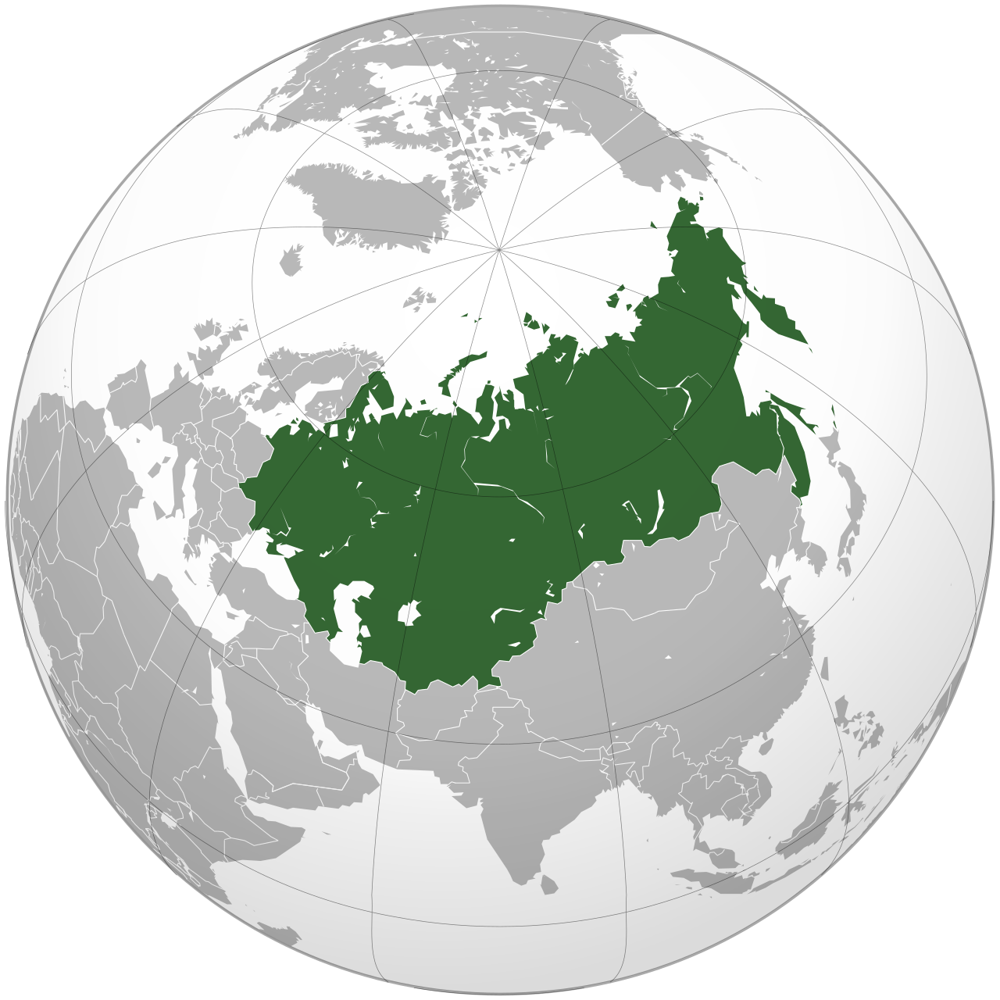

Volume VI · 1922 — 1991
For sixty-nine years the largest single state on earth. Founded by treaty on the 30th of December 1922, dissolved by treaty on the 26th of December 1991. In between it produced — by various combinations of effort, terror, ambition, and ruin — the world's first socialist economy, the most decorated military victory of the twentieth century, the second nuclear arsenal, the first satellite, the first cosmonaut, and the closed cities you cannot find on any contemporary map.
Foreword

The Soviet Union is the only country in this library that was, in its own formal self-description, not a country at all. It was a union — voluntarily formed, in theory; permanently dissoluble, in theory — of nations who had agreed to a common political programme. The programme was Marxism-Leninism. The dissolubility was theoretical until it became real, on a single day in December 1991, when the leaders of three of its constituent republics signed a paper in a hunting lodge in the Belarusian forest and the country went out of existence.
This volume covers the Soviet Union as a continuous political entity from the formal union treaty of December 1922 to the dissolution agreements of December 1991. It does not extensively cover the prior period — the 1917 revolutions and the civil war that produced the state — because that material belongs more properly to a volume on the late Russian Empire than to one on its successor. The volume is written, like the others in the library, as long-form editorial prose. It does not take a position on whether the Soviet Union should have existed. It tries to describe what it was.
The country covered by this volume contained, at peak, about 290 million people, fifteen union republics, twenty autonomous republics, eight autonomous oblasts, and ten autonomous okrugs. It used, officially, fifteen state languages and recognised perhaps a hundred more for regional and educational purposes. Its economy was a planned economy with no private ownership of productive assets. Its army was, by the 1970s, the largest in the world by any reasonable measure. Its security apparatus was the most extensive in any modern state. Its sport, its space programme, its ballet, its cinema, and its literature were, at various moments, world-leading. Its consumer economy, its agricultural sector, and its non-military civilian technology were almost continuously inadequate to the population it was supposed to serve.
The contradictions of the Soviet state are inseparable from any honest assessment of it. The point of the chapters that follow is to describe both the achievements and the costs, in proportions the reader can judge.
"We will bury you." — Nikita Khrushchev to Western ambassadors, Moscow, 18 November 1956; widely mistranslated, the sense was "we will outlast you," not military threat
The Book — ten chapters
After the book
The Guide
Moscow and Leningrad, Volgograd and Murmansk, Yerevan and Tashkent, the metro stations, the closed cities now open, and the great Soviet-era monuments still standing.
The Routes
The Trans-Siberian in segments. The Caucasus loop, Tbilisi to Baku. The Central Asian Silk Road, Tashkent to Almaty.
The Errors
The USSR was not "always going to fall." It did not collapse because of Reagan. The kitchen debate was not really about kitchens. Ten beliefs corrected.